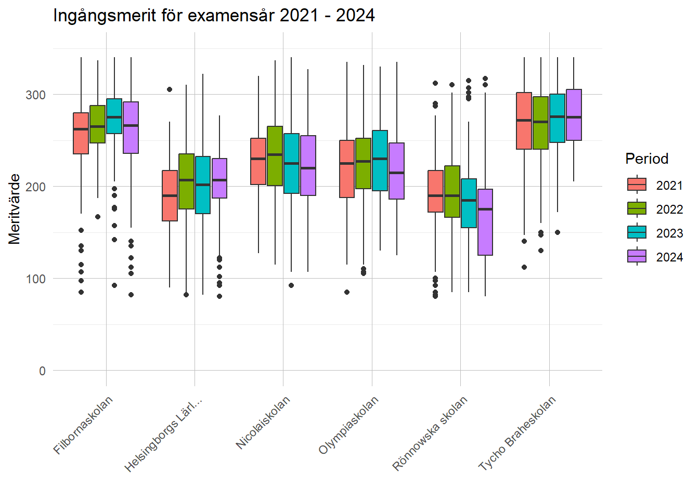
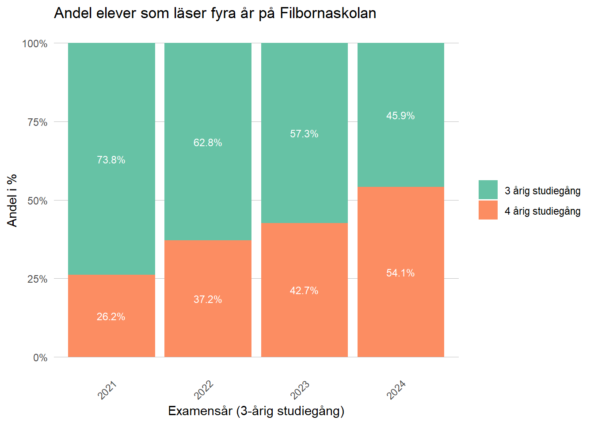
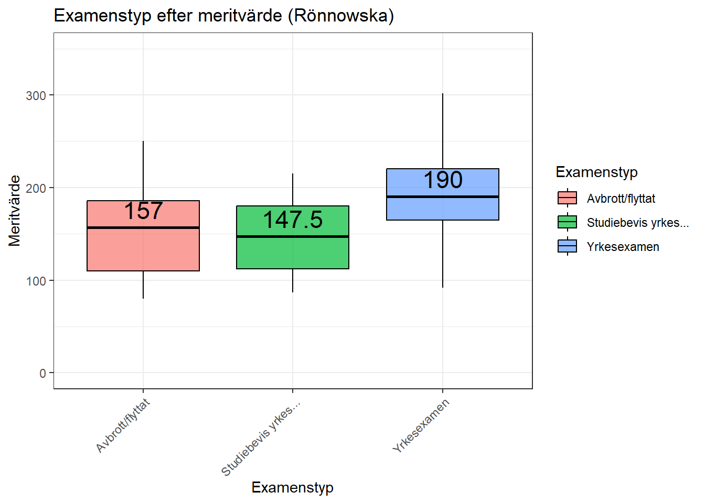
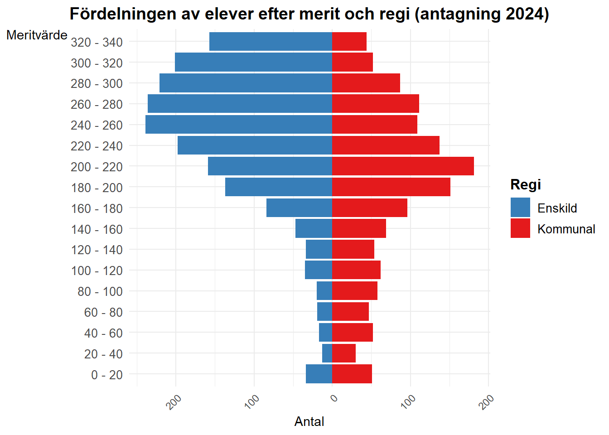

Genomströming Helsingborgs gymnasieskolor
Skolverket publicerade i slutet av 2024 siffror för genomströmningen i landets gymnasieskolor. Helsingborg har sett en nedgång i sin genomströmning, från 73% till 66,2% mellan 2023 och 2024. Det är både Högskoleförberedande program och Yrkesprogram som minskatt där yrkesprogram har haft den största nedgången. Begreppet genomströmning refererar här till skolverkets definition av examen inom 3 år:
“…andelen elever per program som påbörjat gymnasiestudier, gått ut gymnasieskolan med examen 3 år efter det att de började i gymnasieskolan”
““Redovisningen av andel med examen görs för det program och för den skola eleverna började på som nybörjare för tre år sedan, även om eleverna fått slutbetyg efter att ha bytt program eller bytt skola/ort.””
I figur 1 ser vi förändringen i genomströmning under de senaste 6 åren. Både Yrkesprogram och Högskoleförberedande program har minskat och nått de lägsta nivåerna sedan 2020. I tabell 1 framgår det att tre skolor har upplevt en större nedgång jämfört med förra året, där Filbornaskolan och Rönnowska skolan båda har sett en minskning med mer än 20 procentenheter.
| Skolenhet | 2021 | 2022 | 2023 | 2024 |
|---|---|---|---|---|
| Filbornaskolan | 50.0 | 55.5 | 61.6 | 40.1 |
| Helsingborgs Lärlingsgymnasium | 67.1 | 76.1 | 78.0 | 83.3 |
| Nicolaiskolan | 84.1 | 76.9 | 75.7 | 80 |
| Olympiaskolan | 52.8 | 67.8 | 71.6 | 63.4 |
| Rönnowska skolan | 82.8 | 81.0 | 78.0 | 57 |
| Tycho Braheskolan | 80.1 | 83.0 | 74.7 | 73.3 |
Ingående meritvärde
Elevernas ingångsmeritvärden ger en god indikation på hur de kommer att prestera under gymnasietiden. Figure 2 visar de ingående meritvärdena för elever som tog examen mellan 2021 och 2024. Visserligen har flera skolor lägre meritvärden för elevkullen 2024 jämfört med 2023, men Rönnowska skolan sticker ut med en markant nedgång. Den lila rutan, som representerar 2024 års kull, är betydligt lägre än tidigare år.

Vi kommer titta närmare på förändringarna för Filbornaskolan och Rönnowska skolan. I tabell 2 (årskurs 1 HT21 motsvarar årskurs 3 VT24 ) ser vi att dessa skolor har ungefär en tredjedel av alla elever och deras procentuella fall kommer därför ha stor påverkan på kommunsifforna.
| Skola | Program | Antal_elever_skolår_1 |
|---|---|---|
| Filbornaskolan | Nationella program | 153 |
| Helsingborgs Lärlingsgymnasium | Nationella program | 118 |
| Nicolaiskolan | Nationella program | 190 |
| Olympiaskolan | Nationella program | 101 |
| Rönnowska skolan | Nationella program | 154 |
| Tycho Braheskolan | Nationella program | 187 |
| Helsingborgs kommunala | Nationella program | 903 |
Antal elever 15 oktober 2021 (Skolverket)
Filbornaskolan
Filbornaskolan har sett en minskning på över 20 procentenheter i genomströmningen från elevkullen 2023 till 2024. Meritvärdesjämförelser visar på vissa förändringar, där Barn- och fritidsprogrammet samt Ekonomiprogrammet har tappat något i meritvärde, medan övriga program till och med visar en positiv trend (figur 3).
Denna minskning i genomströmning stämmer dock inte överens med den övriga statistiken för Filbornaskolan. I tabell 3 och 4 kan vi istället se positiva trender. Andelen som tog examen (jämfört med studiebevis) var 2024 hög, och andelen elever som tog examen på fyra år 2024 är större än tidigare år. Med tanke på detta kan inte den övergripande statistiken förklara tappet i genomströmning.
Förklaringen ligger snarare i förändringen av andelen elever som läser 3 respektive 4 år. I figur 4 kan vi se hur andelen elever som läser idrottsprofil har förändrats bland de som tog examen de senaste fyra åren. Andelen har på fyra år ökat från ungefär en fjärdedel till mer än hälften. Med tanke på att de övriga resultatmåtten är relativt höga, ger det en rimlig förklaring att den ökade andelen som läser en fyraårig utbildning är en starkt bidragande orsak till den minskade genomströmningen på Filbornaskolan.

| Skolenhet | Program | Genomströmning | Antagning2020 | Antagning2019 | Antagning2018 |
|---|---|---|---|---|---|
| Filbornaskolan | Högskoleförberedande program | Andel elever (%) med examen från gymnasieskolan inom 4 år | 99.2 | 95.0 | 94.2 |
| Filbornaskolan | Yrkesprogram | Andel elever (%) med examen från gymnasieskolan inom 4 år | 88.0 | 88.9 | 75.9 |
| Skola | Program | Antal_elever | Andel_med_examen |
|---|---|---|---|
| Filbornaskolan | Yrkesprogram | 17 | 94.1 |
| Filbornaskolan | Högskoleförberedande program | 96 | 96.9 |

Rönnowska skolan
Rönnowska skolan uppvisar en nedgång på över 20 procentenheter i genomströmningsstatistiken, vilket framgår av Table 1 ovan. För att förstå denna utveckling närmare kan vi analysera förändringarna i ingående meritvärden för elever som tog examen 2024 jämfört med 2023. Figure 5 visar att Bygg- och anläggningsprogrammet, Fordons- och transportprogrammet samt Vård- och omsorgsprogrammet har upplevt en markant sänkning av meritvärden.
Samtidigt har antalet antagna elever till Bygg- och anläggningsprogrammet och Fordons- och transportprogrammet ökat med cirka 50% (se Table 5). Det är viktigt att notera att denna ökning av antalet elever sammanfaller med en kraftig nedgång i genomströmning för dessa program. Enligt Table 6, som visar genomströmningen för de större programmen på Rönnowska skolan, har både Bygg- och anläggningsprogrammet (BA) och Fordons- och transportprogrammet (FT) gått från en genomströmning på 80% eller mer till strax över 40%.
Kombinationen av fler elever och lägre genomströmning på dessa program har en betydande inverkan på skolans totala statistik. Figure 6 illustrerar förändringen i genomströmning för Rönnowska skolan från 2022 till 2024, med fokus på elever som både började och tog examen på skolan. Diagrammet visar en 50% ökning av avbrott/skolbyten, en fördubbling av andelen studiebevis och en minskning med cirka 20 procentenheter för andelen elever med examen.
| Program | Antagna_2020 | Antagna_2021 | Skillnad_antal | Skillnad_proc |
|---|---|---|---|---|
| Bygg- och anläggningsprogrammet | 23 | 35 | 12 | 52 |
| El- och energiprogrammet | 47 | 33 | -14 | -30 |
| Fordons- och transportprogrammet | 25 | 37 | 12 | 48 |
| Hantverksprogrammet | 2 | 2 | 0 | 0 |
| Hotell- och turismprogrammet | 8 | 7 | -1 | -12 |
| Restaurang- och livsmedelsprogrammet | 22 | 20 | -2 | -9 |
| VVS- och fastighetsprogrammet | 17 | 10 | -7 | -41 |
| Vård- och omsorgsprogrammet | 12 | 14 | 2 | 17 |
| Skolenhet | Program | Genomströmning | Examen 2023 | Examen 2024 |
|---|---|---|---|---|
| Rönnowska skolan | Bygg- och anläggningsprogrammet | Andel elever (%) med examen från gymnasieskolan inom 3 år | 41.9 | 85.0 |
| Rönnowska skolan | El- och energiprogrammet | Andel elever (%) med examen från gymnasieskolan inom 3 år | 71.4 | 75.6 |
| Rönnowska skolan | Fordons- och transportprogrammet | Andel elever (%) med examen från gymnasieskolan inom 3 år | 44.0 | 80.0 |
| Rönnowska skolan | Restaurang- och livsmedelsprogrammet | Andel elever (%) med examen från gymnasieskolan inom 3 år | 88.9 | 72.2 |

Genomströmning efter merit
Vi har visat att ingångsmeritvärden har minskat på flera program, vilket kan påverka elevernas möjligheter att ta examen. Figure 7 visar fördelningen av meritvärden och medianmeritvärdet för elever som avbröt sina studier/flyttade, fick studiebevis respektive tog yrkesexamen. Figuren inkluderar alla elever som började på Rönnowska skolan 2021 och således skulle ha tagit examen 2024. Det är tydligt att medianmeritvärdet för gruppen som tog examen är högre än för de elever som avbröt/flyttade eller endast fick studiebevis.
Figure 8 ger ett mer detaljerat exempel på denna fördelning genom att fokusera på elever inom BA och FT. Alla grupper har en stor spridning av meritvärde, men medianvärdena och boxarna uppvisar tydliga skillnader i fördelningen.”

Vad har hänt under 2022 - 2024
Figure 2 i början av dokumentet visar förändringen av ingångsmeritvärden fram till antagningsår 2021, eftersom de är de senaste som tog examen. Men vi har därefter gjort ytterligare tre antagningsomgångar, hur ser fördelningen av meritvärde ut för dessa senare antagningsår?
Figure 9 är en fortsättning på grafen ovan. Sista året i första grafen (2021 Lila) är första året i andra grafen (också lila). Vi noterar att för elever antagna HT2022, dvs de som kommer ta examen 2025 så var antagningspoängen ännu lägre än de som gick ut 2024. Antagningsåren 2023-2024 är lite mer varierade där vissa skolor har bättre meritvärden och andra sämre.
Meritvärden för fritstående och kommunala skolor
I Figure 10 visas meritvärdesfördelningen för högskoleförberedande program på fristående och kommunala skolor. Även om skillnaden i meritvärde mellan grupperna har varierat, är den alltid märkbar. I grafen är skillnaden mellan år i viss mån svår att urskilja, men medelvärdet har ökat de senaste åren, från 12,7 till 17,9 (se Table 7). En liknande graf för yrkesprogram visar att skillnaden i meritvärde mellan fristående och kommunala skolor är, på senare år, betydligt mindre (se Figure 11).
Avslutningsvis visar Figure 12 hur elever antagna 2024 fördelas efter meritvärde och regi. Här ingår både nationella program och introduktionsprogram. Vi ser att de kommunala skolorna tar emot merparten av eleverna med meritvärden under 220 poäng, medan de fristående skolorna tar emot en mycket större andel av de elever som har högre meritvärden.
| Period | Enskild | Kommunal | Skillnad |
|---|---|---|---|
| 2020 | 269.7 | 257.0 | 12.7 |
| 2021 | 269.9 | 256.0 | 14.0 |
| 2022 | 264.7 | 249.9 | 14.9 |
| 2023 | 270.6 | 253.2 | 17.5 |
| 2024 | 274.1 | 256.3 | 17.8 |
